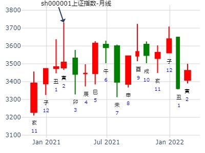
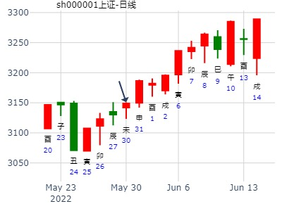

主帖标题: 2014年1月15日上证指数行情
起卦方式：时间起卦 周易天地
公历时间：2014年1月15日9时30分
干支：癸巳年 乙丑月 丙戌日 癸巳时
旬空：午未 戌亥 午未 午未
乾宫：天山遁 乾宫：天地否（六合）
青龙 ▄▄▄▄▄ 父母壬戌土 ▄▄▄▄▄ 父母壬戌土 应
玄武 ▄▄▄▄▄ 兄弟壬申金 应 ▄▄▄▄▄ 兄弟壬申金
白虎 ▄▄▄▄▄ 官鬼壬午火 ▄▄▄▄▄ 官鬼壬午火
螣蛇 ▄▄▄▄▄ 兄弟丙申金 O-> ▄▄ ▄▄ 妻财乙卯木 世
勾陈 妻财甲寅木 ▄▄ ▄▄ 官鬼丙午火 世 ▄▄ ▄▄ 官鬼乙巳火
朱雀 子孙甲子水 ▄▄ ▄▄ 父母丙辰土 ▄▄ ▄▄ 父母乙未土
主帖标题: 3日上证指数最高点 最低点
公历起卦时间：2020年1月3日9时30分 (按农历时间起卦)
干支：己亥年 丙子月 乙巳日 辛巳时 （日空：寅卯）
乾宫：天山遁 乾宫：天地否 (六合)
玄武 父母壬戌土 ▅▅▅▅▅ 父母壬戌土 ▅▅▅▅▅ 应
白虎 兄弟壬申金 ▅▅▅▅▅ 应 兄弟壬申金 ▅▅▅▅▅
腾蛇 官鬼壬午火 ▅▅▅▅▅ 官鬼壬午火 ▅▅▅▅▅
勾陈 兄弟丙申金 ▅▅▅▅▅ ○→ 妻财乙卯木 ▅▅ ▅▅ 世
朱雀 妻财甲寅木 官鬼丙午火 ▅▅ ▅▅ 世 官鬼乙巳火 ▅▅ ▅▅
青龙 子孙甲子水 父母丙辰土 ▅▅ ▅▅ 父母乙未土 ▅▅ ▅▅
本金四十几万 出生年：1987年 性别：男
占事: 2015年投资股票能否大赚 起卦方式：手动摇卦
公历时间：2015年2月6日23时37分
干支：乙未年 戊寅月 甲寅日 甲子时 旬空：辰巳 申酉 子丑 戌亥
神煞：驿马─申 桃花─卯 日禄─寅 贵人─丑，未
乾宫：天山遁 乾宫：天地否（六合）
六神 伏 神 【本 卦】 【变 卦】
玄武 ▄▄▄▄▄ 父母壬戌土 ▄▄▄▄▄ 父母壬戌土 应
白虎 ▄▄▄▄▄ 兄弟壬申金 应 ▄▄▄▄▄ 兄弟壬申金
螣蛇 ▄▄▄▄▄ 官鬼壬午火 ▄▄▄▄▄ 官鬼壬午火
勾陈 ▄▄▄▄▄ 兄弟丙申金 O-> ▄▄ ▄▄ 妻财乙卯木 世
朱雀 妻财甲寅木 ▄▄ ▄▄ 官鬼丙午火 世 ▄▄ ▄▄ 官鬼乙巳火
青龙 子孙甲子水 ▄▄ ▄▄ 父母丙辰土 ▄▄ ▄▄ 父母乙未土
寅月寅日，兄弟日破月破无力。等巳月合申有力开跌。
测方大炭素辛丑年寅卯辰月哪月顶？
出生：2021 年 性别：男 占事：没填
排卦：元亨利贞网六爻在线排盘系统 https://www.china95.net
公历起卦时间：2021年2月22日7时39分 (电脑自动)
干支：辛丑年 庚寅月 辛丑日 壬辰时 （日空：辰巳）
乾宫：天山遁 乾宫：天地否 (六合)
螣蛇 父母壬戌土 ▅▅▅▅▅ 父母壬戌土 ▅▅▅▅▅ 应
勾陈 兄弟壬申金 ▅▅▅▅▅ 应 兄弟壬申金 ▅▅▅▅▅
朱雀 官鬼壬午火 ▅▅▅▅▅ 官鬼壬午火 ▅▅▅▅▅
青龙 兄弟丙申金 ▅▅▅▅▅ ○→ 妻财乙卯木 ▅▅ ▅▅ 世
玄武 妻财甲寅木 官鬼丙午火 ▅▅ ▅▅ 世 官鬼乙巳火 ▅▅ ▅▅
白虎 子孙甲子水 父母丙辰土 ▅▅ ▅▅ 父母乙未土 ▅▅ ▅▅

主帖标题: (05)上证指数3月31日走势.( 时间 数 )
出生年：年 —性别：男 ———占事05)
上证指数3月31日走势.( 时间 数 )
起卦方式：手工指定 中国术数网线上排盘系统
公历时间：2005年3月31日9时30分 ——
农历时间：乙酉年 二月二十二日巳时
干支：乙酉年 己卯月 甲寅日 己巳时 旬空：午未 申酉 子丑 戌亥
神煞：驿马─申 桃花─卯 日禄─寅 贵人─丑，未
乾宫：天山遁 乾宫：天地否（六合）
六神 伏 神 【本 卦】 【变 卦】
玄武 ▄▄▄▄▄ 父母壬戌土 ▄▄▄▄▄ 父母壬戌土 应
白虎 ▄▄▄▄▄ 兄弟壬申金 应 ▄▄▄▄▄ 兄弟壬申金
螣蛇 ▄▄▄▄▄ 官鬼壬午火 ▄▄▄▄▄ 官鬼壬午火
勾陈 ▄▄▄▄▄ 兄弟丙申金 O-> ▄▄ ▄▄ 妻财乙卯木 世
朱雀 妻财甲寅木 ▄▄ ▄▄ 官鬼丙午火 世 ▄▄ ▄▄ 官鬼乙巳火
青龙 子孙甲子水 ▄▄ ▄▄ 父母丙辰土 ▄▄ ▄▄ 父母乙未土
出生年：年 性别：男 占事：占600789鲁抗医药明天走势?
起卦方式：手工指定 www.iqing.net 线上排盘系统
公历时间：2007年3月23日9时30分 星期五
农历时间：丁亥年二月初五巳时
干支：丁亥年 癸卯月 丙辰日 癸巳时 (旬空：子丑)
神煞：驿马—寅 桃花—酉 日禄—巳 贵人—酉，亥
乾宫：天山遁 乾宫：天地否（六合）
六神 伏 神 【本 卦】 【变 卦】
青龙 ▅▅▅▅▅ 父母壬戌土 ▅▅▅▅▅ 父母壬戌土 应
玄武 ▅▅▅▅▅ 兄弟壬申金 应 ▅▅▅▅▅ 兄弟壬申金
白虎 ▅▅▅▅▅ 官鬼壬午火 ▅▅▅▅▅ 官鬼壬午火
螣蛇 ▅▅▅▅▅ 兄弟丙申金 ○→ ▅▅ ▅▅ 妻财乙卯木 世
勾陈 妻财甲寅木 ▅▅ ▅▅ 官鬼丙午火 世 ▅▅ ▅▅ 官鬼乙巳火
朱雀 子孙甲子水 ▅▅ ▅▅ 父母丙辰土 ▅▅ ▅▅ 父母乙未土
此卦兄弟申金动化妻财卯木看跌．
上证3.15壬戌一 -3.19丙寅五哪日顶？
公历起卦时间：2021年3月15日11时14分 (电脑自动)
干支：辛丑年 辛卯月 壬戌日 丙午时 （日空：子丑）
乾宫：天山遁 乾宫：天地否 (六合)
白虎 父母壬戌土 ▅▅▅▅▅ 父母壬戌土 ▅▅▅▅▅ 应
螣蛇 兄弟壬申金 ▅▅▅▅▅ 应 兄弟壬申金 ▅▅▅▅▅
勾陈 官鬼壬午火 ▅▅▅▅▅ 官鬼壬午火 ▅▅▅▅▅
朱雀 兄弟丙申金 ▅▅▅▅▅ ○→ 妻财乙卯木 ▅▅ ▅▅ 世
青龙 妻财甲寅木 官鬼丙午火 ▅▅ ▅▅ 世 官鬼乙巳火 ▅▅ ▅▅
玄武 子孙甲子水 父母丙辰土 ▅▅ ▅▅ 父母乙未土 ▅▅ ▅▅
主帖标题: 越战越勇，测股传奇——操盘纪实
测三和管桩003037何时介入
公历起卦时间：2022年3月30日10时37分 (按农历时间起卦)
干支：壬寅年 癸卯月 壬午日 乙巳时 （日空：申酉）
乾宫：天山遁 乾宫：天地否 (六合)
六神 伏神 本 卦 变 卦
白虎 父母壬戌土 ▅▅▅▅▅ 父母壬戌土 ▅▅▅▅▅ 应
螣蛇 兄弟壬申金 ▅▅▅▅▅ 应 兄弟壬申金 ▅▅▅▅▅
勾陈 官鬼壬午火 ▅▅▅▅▅ 官鬼壬午火 ▅▅▅▅▅
朱雀 兄弟丙申金 ▅▅▅▅▅ ○→ 妻财乙卯木 ▅▅ ▅▅ 世
青龙 妻财甲寅木 官鬼丙午火 ▅▅ ▅▅ 世 官鬼乙巳火 ▅▅ ▅▅
玄武 子孙甲子水 父母丙辰土 ▅▅ ▅▅ 父母乙未土 ▅▅ ▅▅
兄动化财，辰月宜（卯日卖飞了）
预测上证大盘下周走势
公历时间：2012年4月20日17时57分
干 支：壬辰年 甲辰月 辛亥日 丁酉时 旬 空：午未 寅卯 (寅卯) 辰巳
乾宫：天山遁 乾宫：天地否（六合）
六神 伏 神 【本 卦】 【变 卦】
螣蛇 ▄▄▄▄▄ 父母壬戌土 ▄▄▄▄▄ 父母壬戌土 应
勾陈 ▄▄▄▄▄ 兄弟壬申金 应 ▄▄▄▄▄ 兄弟壬申金
朱雀 ▄▄▄▄▄ 官鬼壬午火 ▄▄▄▄▄ 官鬼壬午火
青龙 ▄▄▄▄▄ 兄弟丙申金 O-> ▄▄ ▄▄ 妻财乙卯木 世
玄武 妻财甲寅木 ▄▄ ▄▄ 官鬼丙午火 世 ▄▄ ▄▄ 官鬼乙巳火
白虎 子孙甲子水 ▄▄ ▄▄ 父母丙辰土 ▄▄ ▄▄ 父母乙未土
兄动化财，子孙和财伏藏，父母值月，子孙值日。卦变六合。
总体判断，周一二财出空，大盘加速上涨。辰日父母值日，有利空出现，本日开始调整。周四五，四五日官鬼值日泄财，下跌。
因此短线操作周二前逢高派发，周三到周五观望。

主帖标题: 解读金眼牛2020年4月大盘卦
--李版，我今天手摇，建设银行未来30天，也不好
吉祥如意，我4月手摇建行，也是跌卦，24日（4月交易日中，唯一 的酉日），跌到最低点。 但，30日，癸卯又涨回最高点 （4月交易日中，第二个 卯日）。 一个月内， 跌了，有可能涨回
时间: 2020-04-06
干支：庚子年 庚辰月 己卯日 癸酉时 (卦身：丑)
主变卦 天山遁(乾宫) 之 天地否(乾宫) [空亡:申、酉]
勾陈 ▅▅▅▅▅ 父母壬戌土 ▅▅▅▅▅ 父母壬戌土 应
朱雀 ▅▅▅▅▅ 兄弟壬申金 应 ▅▅▅▅▅ 兄弟壬申金
青龙 ▅▅▅▅▅ 官鬼壬午火 ▅▅▅▅▅ 官鬼壬午火
玄武 ▅▅▅▅▅○兄弟丙申金 ▅▅ ▅▅ 妻财乙卯木 世
白虎 妻财甲寅木 ▅▅ ▅▅ 官鬼丙午火 世 ▅▅ ▅▅ 官鬼乙巳火
螣蛇 子孙甲子水 ▅▅ ▅▅ 父母丙辰土 ▅▅ ▅▅ 父母乙未土

主帖标题: 2010年全年上证指数行情预测
17--21日上证指数行情
公历时间：2010-5-15 10:42:00
农历时间： 农历庚寅年(虎)四月初二
节气：2010-5-5 23:29:00立夏上元
干支:庚寅 辛巳 乙丑 辛巳
当日旬空：午未(年)申酉(月)戌亥(日) 申酉(时)
注：此处奇门盘删去。
起卦方式：时间起卦 周易天地www.64gua.com六爻线上排盘系统
公历时间：2010年5月15日10时49分 农历时间：庚寅年 四月初二日巳时
干支：庚寅年 辛巳月 乙丑日 辛巳时
旬空：午未 申酉 戌亥 申酉
神煞：驿马─亥 桃花─午 日禄─卯 贵人─子，申
乾宫：天山遁 乾宫：天地否（六合）
六神 伏 神 【本 卦】 【变 卦】
玄武 ▄▄▄▄▄ 父母壬戌土 ▄▄▄▄▄ 父母壬戌土 应
白虎 ▄▄▄▄▄ 兄弟壬申金 应 ▄▄▄▄▄ 兄弟壬申金
螣蛇 ▄▄▄▄▄ 官鬼壬午火 ▄▄▄▄▄ 官鬼壬午火
勾陈 ▄▄▄▄▄ 兄弟丙申金 O-> ▄▄ ▄▄ 妻财乙卯木 世
朱雀 妻财甲寅木 ▄▄ ▄▄ 官鬼丙午火 世 ▄▄ ▄▄ 官鬼乙巳火
青龙 子孙甲子水 ▄▄ ▄▄ 父母丙辰土 ▄▄ ▄▄ 父母乙未土
王注：时间卦，不大符合走势.
主帖标题: 刚刚申购一个创业板股票，中不中
公历起卦时间：2020年5月26日10时14分 (按农历时间起卦)
干支：庚子年 辛巳月 己巳日 己巳时 （日空：戌亥）
神煞：驿马－亥 桃花－午 日禄－午 贵人－子，申
乾宫：天山遁 乾宫：天地否 (六合)
六神 伏神 本 卦 变 卦
勾陈 父母壬戌土 ▅▅▅▅▅ 父母壬戌土 ▅▅▅▅▅ 应
朱雀 兄弟壬申金 ▅▅▅▅▅ 应 兄弟壬申金 ▅▅▅▅▅
青龙 官鬼壬午火 ▅▅▅▅▅ 官鬼壬午火 ▅▅▅▅▅
玄武 兄弟丙申金 ▅▅▅▅▅ ○→ 妻财乙卯木 ▅▅ ▅▅ 世
白虎 妻财甲寅木 官鬼丙午火 ▅▅ ▅▅ 世 官鬼乙巳火 ▅▅ ▅▅
螣蛇 子孙甲子水 父母丙辰土 ▅▅ ▅▅ 父母乙未土 ▅▅ ▅▅
主帖标题: 测股市的思维一例
公历起卦时间：2022年5月30日9时52分 (按
干支：壬寅年 乙巳月 癸未日 丁巳时 （日空：申酉）
乾宫：天山遁 乾宫：天地否 (六合)
六神 伏神 本 卦 变 卦
白虎 父母壬戌土 ▅▅▅▅▅ 父母壬戌土 ▅▅▅▅▅ 应
螣蛇 兄弟壬申金 ▅▅▅▅▅ 应 兄弟壬申金 ▅▅▅▅▅
勾陈 官鬼壬午火 ▅▅▅▅▅ 官鬼壬午火 ▅▅▅▅▅
朱雀 兄弟丙申金 ▅▅▅▅▅ ○→ 妻财乙卯木 ▅▅ ▅▅ 世
青龙 妻财甲寅木 官鬼丙午火 ▅▅ ▅▅ 世 官鬼乙巳火 ▅▅ ▅▅
玄武 子孙甲子水 父母丙辰土 ▅▅ ▅▅ 父母乙未土 ▅▅ ▅▅
30日未日涨0.6%，测31日申日大盘。
1、30日未日，涨，落在父母爻，那么父母爻为多方还是空方？未日未时大盘涨，说父母是空方，肯定不对。
土为多方，妻财卯木则一定是空方。因为木克土。兄弟克空方妻财，为多方。有人可能问，金不是泄土吗，为何不是空方？木为空方，金克木，金为多方。财耗孙，大盘涨，但是由于孙被耗，大盘的原动力慢慢减弱，在酉日大盘到达高点后由于空方木增强，慢慢下跌。多方是一对，空方为一对。多方一对互相泄耗，反映的是多方能量的慢慢衰竭。
你对应开盘巳时的寅卯时段，巳时巳段，未时的卯段和申段，大盘是涨的还是跌的。就可以看出，妻财和兄弟的多空。
假如一看申日妻财被克死就是跌，可能太简单了。假如断卦如此简单，人人都成大师了。
王注：申日涨，可能是实际旬空仍起作用。此例 概率外。

主帖标题: 英国能脱欧吗？？？
六爷 发表于 2016-6-26 01:24
断脱欧的卦理是什么？这是一个很简单的卦理。只要卦理不对，就是瞎猜。就是运气好。
公历起卦时间：2016年6月23日10时5分 (按农历时间起卦)
干支：丙申年 甲午月 丙子日 癸巳时 （日空：申酉）
神煞：驿马－寅 桃花－酉 日禄－巳 贵人－酉，亥
乾宫：天山遁 乾宫：天地否 (六合)
六神 伏神 本 卦 变 卦
青龙 父母壬戌土 ▅▅▅▅▅ 父母壬戌土 ▅▅▅▅▅ 应
玄武 兄弟壬申金 ▅▅▅▅▅ 应 兄弟壬申金 ▅▅▅▅▅
白虎 官鬼壬午火 ▅▅▅▅▅ 官鬼壬午火 ▅▅▅▅▅
腾蛇 兄弟丙申金 ▅▅▅▅▅ ○→ 妻财乙卯木 ▅▅ ▅▅ 世
勾陈 妻财甲寅木 官鬼丙午火 ▅▅ ▅▅ 世 官鬼乙巳火 ▅▅ ▅▅
朱雀 子孙甲子水 父母丙辰土 ▅▅ ▅▅ 父母乙未土 ▅▅ ▅▅
兄弟分家带走财产，欧盟是个大家庭，兄动为劫财，今兄动化财（兄弟自己拿走财产），是兄弟分家分财产之象；如果卦中孙不伏，则兄动生孙，脱不了，但今孙伏不得兄动之生利，卦中孙伏不出，兄动无法生孙；兄动自己化财，兄弟申，申在欧盟之西，实指英国搞私捞自利成功了；午月+暗动的午爻官鬼齐齐来克兄，是欧盟的官方政策对英国不好，英国负气出走。此卦很准，不但反映了结果，还反映了原因。我断卦也是乱搞一通的，各位大师的分析为准。
紫光国微6.8壬午星期一-6.12哪日顶？
公历起卦时间：2020年6月9日10时39分 (电脑自动)
干支：庚子年 壬午月 癸未日 丁巳时 （日空：申酉）
神煞：驿马－巳 桃花－子 日禄－子 贵人－卯，巳
乾宫：天山遁 乾宫：天地否 (六合)
六神 伏神 本 卦 变 卦
白虎 父母壬戌土 ▅▅▅▅▅ 父母壬戌土 ▅▅▅▅▅ 应
螣蛇 兄弟壬申金 ▅▅▅▅▅ 应 兄弟壬申金 ▅▅▅▅▅
勾陈 官鬼壬午火 ▅▅▅▅▅ 官鬼壬午火 ▅▅▅▅▅
朱雀 兄弟丙申金 ▅▅▅▅▅ ○→ 妻财乙卯木 ▅▅ ▅▅ 世
青龙 妻财甲寅木 官鬼丙午火 ▅▅ ▅▅ 世 官鬼乙巳火 ▅▅ ▅▅
玄武 子孙甲子水 父母丙辰土 ▅▅ ▅▅ 父母乙未土 ▅▅ ▅▅
九三：系遁，有疾厉，畜臣妾吉。象曰：系遁之厉，有疾惫也。 畜臣妾吉，不可大事也。
标准的天气卦，先跌后涨。

6月19日上证指数预测
公历起卦时间：2020年6月19日9时25分 (按农历时间起卦)
干支：庚子年 壬午月 癸巳日 丁巳时 （日空：午未）
神煞：驿马－亥 桃花－午 日禄－子 贵人－卯，巳
乾宫：天山遁 乾宫：天地否 (六合)
六神 伏神 本 卦 变 卦
白虎 父母壬戌土 ▅▅▅▅▅ 父母壬戌土 ▅▅▅▅▅ 应
螣蛇 兄弟壬申金 ▅▅▅▅▅ 应 兄弟壬申金 ▅▅▅▅▅
勾陈 官鬼壬午火 ▅▅▅▅▅ 官鬼壬午火 ▅▅▅▅▅
朱雀 兄弟丙申金 ▅▅▅▅▅ ○→ 妻财乙卯木 ▅▅ ▅▅ 世
青龙 妻财甲寅木 官鬼丙午火 ▅▅ ▅▅ 世 官鬼乙巳火 ▅▅ ▅▅
玄武 子孙甲子水 父母丙辰土 ▅▅ ▅▅ 父母乙未土 ▅▅ ▅▅
午月巳日官鬼旺，克住兄弟，合绊住兄弟，反而大涨。

主帖标题: 业绩前瞻个股，供参考
以下是引用钱水源在2007-7-7 19:36:00的发言：
主题：苏常柴A[000570]，准备买入能否得财？
丁亥 丁未 壬寅 庚戌 (辰巳空) 丁亥年五月廿三(2007/07/07 19:24:29) 天山遁 天地否
白虎 父母戌土 ／ 父母戌土 ／ 应
腾蛇 兄弟申金 ／ 应 兄弟申金 ／
勾陈 官鬼午火 ／ 官鬼午火 ／
朱雀 兄弟申金 ○ 妻财卯木 ∥ 世妻财寅木：
青龙 官鬼午火 ∥ 世 官鬼巳火 ∥ 子孙子水：
玄武 父母辰土 ∥ 父母未土 ∥
午克兄，下周木空不见财。强鬼治弱兄。此股是干往上拽，不顾其他了。
马后炮：旬尾很快寅卯空，结果等19日出空才正式开涨。
主帖标题: 牛股600071凤凰光学下周涨跌
占事：600071凤凰光学下周涨跌
公历起卦时间：2014年7月4日15时32分 (电脑自动)
干支：甲午年 庚午月 丙子日 丙申时 （日空：申酉）
神煞：驿马－寅 桃花－酉 日禄－巳 贵人－酉，亥
乾宫：天山遁 乾宫：天地否 (六合)
六神 伏神 本 卦 变 卦
青龙 父母壬戌土 ▅▅▅▅▅ 父母壬戌土 ▅▅▅▅▅ 应
玄武 兄弟壬申金 ▅▅▅▅▅ 应 兄弟壬申金 ▅▅▅▅▅
白虎 官鬼壬午火 ▅▅▅▅▅ 官鬼壬午火 ▅▅▅▅▅
腾蛇 兄弟丙申金 ▅▅▅▅▅ ○→ 妻财乙卯木 ▅▅ ▅▅ 世
勾陈 妻财甲寅木 官鬼丙午火 ▅▅ ▅▅ 世 官鬼乙巳火 ▅▅ ▅▅
朱雀 子孙甲子水 父母丙辰土 ▅▅ ▅▅ 父母乙未土 ▅▅ ▅▅
主帖标题: 2016年7月21日星期四上证指数预测
公历：2016年7月21日9时30分，星期四。
干支：丙申年 乙未月 甲辰日 己巳时 (卦身：丑)
主变卦 天山遁(乾宫) 之 天地否(乾宫) [空亡:寅、卯]
玄武 ▅▅▅▅▅ 父母壬戌土 ▅▅▅▅▅ 父母壬戌土 应
白虎 ▅▅▅▅▅ 兄弟壬申金 应 ▅▅▅▅▅ 兄弟壬申金
螣蛇 ▅▅▅▅▅ 官鬼壬午火 ▅▅▅▅▅ 官鬼壬午火
勾陈 ▅▅▅▅▅○兄弟丙申金 ▅▅ ▅▅ 妻财乙卯木 世
朱雀 妻财甲寅木 ▅▅ ▅▅ 官鬼丙午火 世 ▅▅ ▅▅ 官鬼乙巳火
青龙 子孙甲子水 ▅▅ ▅▅ 父母丙辰土 ▅▅ ▅▅ 父母乙未土

主帖标题: 今日测的一只个股，大家发表看法
公历起卦时间：2020年7月12日10时12分 (手工指定)
干支：庚子年 癸未月 丙辰日 癸巳时 （日空：子丑）
神煞：驿马－寅 桃花－酉 日禄－巳 贵人－酉，亥
乾宫：天山遁 乾宫：天地否 (六合)
六神 伏神 本 卦 变 卦
青龙 父母壬戌土 ▅▅▅▅▅ 父母壬戌土 ▅▅▅▅▅ 应
玄武 兄弟壬申金 ▅▅▅▅▅ 应 兄弟壬申金 ▅▅▅▅▅
白虎 官鬼壬午火 ▅▅▅▅▅ 官鬼壬午火 ▅▅▅▅▅
螣蛇 兄弟丙申金 ▅▅▅▅▅ ○→ 妻财乙卯木 ▅▅ ▅▅ 世
勾陈 妻财甲寅木 官鬼丙午火 ▅▅ ▅▅ 世 官鬼乙巳火 ▅▅ ▅▅
朱雀 子孙甲子水 父母丙辰土 ▅▅ ▅▅ 父母乙未土 ▅▅ ▅▅
主题：9月9日-9月12日黄金的走势 1258
甲午 癸酉 癸未 丁巳 (申酉空) 甲午年八月十六(2014/09/09 10:19:35)
天山遁 天地否
白虎 父母壬戌 ／ 父母壬戌 ／ 应
腾蛇 兄弟庚申 ／ 应 兄弟庚申 ／
勾陈 官鬼戊午 ／ 官鬼戊午 ／
朱雀 兄弟庚申 ○ 妻财乙卯 ∥ 乾
妻财甲寅：青龙 官鬼戊午 ∥ 乾 官鬼丁巳 ∥
子孙壬子：玄武 父母丙辰 ∥ 父母己未 ∥

2014年9月23日黄金的走势 1215
手工指定 六爻排盘 www.d8soft.com
驿马-亥 桃花-午 日禄-午 贵人-酉亥
干支：甲午年 癸酉月 丁酉日 甲辰时 (辰巳空)
乾宫(金):天山遁 乾宫(金):天地否(六合)
六神 伏神 【本 卦】 【变 卦】
青龙 父母壬戌土▅▅▅▅▅ 父母壬戌土▅▅▅▅▅应
玄武 兄弟壬申金▅▅▅▅▅应 兄弟壬申金▅▅▅▅▅
白虎 官鬼壬午火▅▅▅▅▅ 官鬼壬午火▅▅▅▅▅
螣蛇 兄弟丙申金▅▅▅▅▅ O→妻财乙卯木▅▅ ▅▅世
勾陈 妻财甲寅木 官鬼丙午火▅▅ ▅▅世 官鬼乙巳火▅▅ ▅▅
朱雀 子孙甲子水 父母丙辰土▅▅ ▅▅ 父母乙未土▅▅ ▅▅
主帖标题: 送你一匹汉血宝马
占事：002066瑞泰科技近期涨跌
排卦：元亨利贞网六爻在线排盘系统 http://www.china95.net
公历起卦时间：2014年9月24日17时48分 (电脑自动)
干支：甲午年 癸酉月 戊戌日 辛酉时 （日空：辰巳）
神煞：驿马－申 桃花－卯 日禄－巳 贵人－丑，未
乾宫：天山遁 乾宫：天地否 (六合)
六神 伏神 本 卦 变 卦
朱雀 父母壬戌土 ▅▅▅▅▅ 父母壬戌土 ▅▅▅▅▅ 应
青龙 兄弟壬申金 ▅▅▅▅▅ 应 兄弟壬申金 ▅▅▅▅▅
玄武 官鬼壬午火 ▅▅▅▅▅ 官鬼壬午火 ▅▅▅▅▅
白虎 兄弟丙申金 ▅▅▅▅▅ ○→ 妻财乙卯木 ▅▅ ▅▅ 世
腾蛇 妻财甲寅木 官鬼丙午火 ▅▅ ▅▅ 世 官鬼乙巳火 ▅▅ ▅▅
勾陈 子孙甲子水 父母丙辰土 ▅▅ ▅▅ 父母乙未土 ▅▅ ▅▅
主题：红塔证券601236下半年走势
己亥 甲戌 庚寅 壬午 (午未空) 己亥年九月廿二(2019/10/20 11:46:19)
天山遁 天地否
腾蛇 父母丙戌 ／ 父母丙戌 ／ 应
勾陈 兄弟甲申 ／ 应 兄弟甲申 ／
朱雀 官鬼壬午 ／ 官鬼壬午 ／
青龙 兄弟甲申 ○ 妻财己卯 ∥ 乾
妻财戊寅：玄武 官鬼壬午 ∥ 乾 官鬼辛巳 ∥
子孙丙子：白虎 父母庚辰 ∥ 父母癸未 ∥
起卦现价14.75
从卦象技术图形看：
1、兄弟化财，是为先跌后涨的趋势，标准空转多的趋势
2、官鬼持世临玄武，暗示是主力庄家蓄意操作交易所致
时间涨跌应期分析：
1、空方时间段：10月7日-11月7日为戌土月，兄弟金得土生则旺，空方在此月打击多方价格正凶，暗示主力拉低股价的行为，预计底部为下周时段10月24号左右附近
2、多方时间段：11月7-1月1日后续亥子月财逢生旺，价格则止跌反弹上涨收阳趋势
3、丑月1月7日-2月7日稍有调整震荡
4、开春2月7日-4月7日寅卯月一波上涨见顶获利收割机会
贺远致问天孚通信未来三个月223111
时间: 2024-10-22 14时12分
干支: 甲辰年甲戌月己未日 (旬空: 子丑 )
天山遁 天地否
六神 伏神 本 卦 变 卦
勾陈 ▅▅▅▅▅ 父母戌土 ▅▅▅▅▅ 父母戌土 应
朱雀 ▅▅▅▅▅ 兄弟申金 应 ▅▅▅▅▅ 兄弟申金
青龙 ▅▅▅▅▅ 官鬼午火 ▅▅▅▅▅ 官鬼午火
玄武 ▅▅▅▅▅ 兄弟申金 Ｏ→ ▅▅ ▅▅ 妻财卯木 世
白虎 妻财寅木▅▅ ▅▅ 官鬼午火 世 ▅▅ ▅▅ 官鬼巳火
腾蛇 子孙子水▅▅ ▅▅ 父母辰土 ▅▅ ▅▅ 父母未土
主帖标题: 12月、1月沪深300
占事：12月
公历起卦时间：2022年11月25日10时30分 (电脑自动)
干支：壬寅年 辛亥月 壬午日 乙巳时 （日空：申酉）
乾宫：天山遁 乾宫：天地否 (六合)
白虎 父母壬戌土 ▅▅▅▅▅ 父母壬戌土 ▅▅▅▅▅ 应
螣蛇 兄弟壬申金 ▅▅▅▅▅ 应 兄弟壬申金 ▅▅▅▅▅
勾陈 官鬼壬午火 ▅▅▅▅▅ 官鬼壬午火 ▅▅▅▅▅
朱雀 兄弟丙申金 ▅▅▅▅▅ ○→ 妻财乙卯木 ▅▅ ▅▅ 世
青龙 妻财甲寅木 官鬼丙午火 ▅▅ ▅▅ 世 官鬼乙巳火 ▅▅ ▅▅
玄武 子孙甲子水 父母丙辰土 ▅▅ ▅▅ 父母乙未土 ▅▅ ▅▅